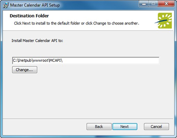

Install or Upgrade the Master Calendar Web Service
Process Overview:
Once you meet the prerequisites, download the installation files, run the Master Calendar Installer, and Install/upgrade the Database Component, you will:
- Install/upgrade the API Web Service (following the steps below).
Optional:
- Download the MCAPI.msi file onto the web server that will be running the Master Calendar API Web Service (typically the web server that hosts your Master Calendar site.)
- Run MCAPI.msi.
- The first screen welcomes you to the Master Calendar API Setup Wizard. Click Next to begin the installation process. The Destination Folder screen will appear.

- Select the destination folder. The installation process will create a new physical directory on your web server based on the destination folder path entered (“MCAPI” in the example above.) Click Next.
Note: The Master Calendar API Web Service should not be installed in the same physical directory as other EMS web-based products OR under a site running another version of Master Calendar or the Master Calendar API.
- The SQL Server and database information screen will appear.

- Enter your Master Calendar SQL Instance Name.
- Enter your Master Calendar Database Name.
- Click Next.
- The Virtual Directory information screen will appear.

- The Virtual Directory Name will default to the destination folder specified in Step 4. It is recommended that you keep the default setting. The installation process will create a virtual directory on your web server based on the virtual directory entered (“MCAPI” in the example above.) Click Next.
Note: The Master Calendar API Web Service should not be installed in the same virtual directory as other EMS web-based products OR under a site running another version of Master Calendar or the Master Calendar API.
- The Ready to install Master Calendar API screen will appear. Click Install to install the Master Calendar API Web Service.
- The Completed the Master Calendar API Setup Wizard screen will appear. Click Finish.